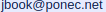

Druhé vydání průvodce programovacím jazykem Java od jeho základů přes základy HTML
až po interaktivní webové aplikace.
S řešenými příklady ve formě jednoho spustitelného projektu.
Anotace
Chcete se naučit programovat?
Zkuste novou učebnici jazyka Java určenou studentům středních škol a jejich pedagogům.
Výklad je demonstrován na příkladech s výstupem do internetového prohlížeče.
Kromě programovacího jazyka kniha osvětluje také pojmy z objektového programování, regulární výrazy, diagramy tříd jazyka UML, webové pojmy,
Maven projekty a některá další související témata.
Text je doplněn barevnými ilustracemi, grafy a snímky reálných obrazovek.
Java patří dlouhodobě mezi nejžádanější programovací jazyky na trhu práce v oboru informačních technologií.
Ukázka knihy je tady.
Komu je kniha určena
Kniha cílí na studenty středních škol, šířka tématu a pojetí přiložených příkladů však může oslovit
i pedagogy a další ostatní čtenáře se zájmem o informační technologie a vývoj SW aplikací v jazyce Java.
Proč jsem knihu napsal
Když jsem začínal s jazykem Java, kladl jsem si otázku, zdali není
možné napsat učebnici nějakým více atraktivním způsobem.
Po letech praxe jsem zveřejnil
krátký článek o sestavování webových stránek v jazyce Java, postavených
na objektovém modelu HTML elementů, a přitom mě napadlo, že tohle by mohl být
skvělý prostředek pro tvorbu interaktivních učebnicových příkladů při studiu
jazyka. V nejbližším knihkupectví jsem otevřel jednu z nových učebnic tohoto
jazyka a spatřil opět formální popis s černobílými obrázky, akademickými příklady
a několika málo grafickými ukázkami postavenými na dnes už zacházející knihovně
Swing. Tehdy jsem se rozhodl vykročit na nejistou dráhu inovativního spisovatele
učebnice o programování.
Příklady
Po zakoupení knihy si prosím uschovejte doklad o nákupu, protože vás opravňuje používat ukázkové příklady k soukromým i komerčním účelům.
Distribuce zdrojového kódu k této knize je možná pouze vlastníkem knihy při zachování původního komentáře v hlavičce.
Třetí strana je oprávněna použít zdrojový kód pouze pro své vlastní studium, jinak je třeba získat vlastní licenci zakoupením knihy nebo e-booku.
Licence tak umožňuje pedagogům použití příkladů ve výuce.
V případě nejasností se obracejte na autora knihy, kontakt je zde.
Zvažte prosím, že výroba knihy není jedinou nákladovou položkou, další výdaje souvisí s propagací a distribucí.
Děkuji tímto za podporu i pochopení.
Stažením souboru vyjadřujete souhlas s těmito podmínkami.
Upozorňuji, že instruktážní video popisuje instalaci prostředí pro starší vydání knihy. Postup pro druhé vydání se v zásadě neliší, je však třeba použít Javu verze 17.
Odkazy
Doporučená Java k příkladům je zde. Příklady jsou k nahlédnutí tady, a odkaz ke stažení zdrojových kódů najdete v knize.Upozorňuji, že instruktážní video popisuje instalaci prostředí pro starší vydání knihy. Postup pro druhé vydání se v zásadě neliší, je však třeba použít Javu verze 17.
O autorovi
Pavel Ponec (nar. 1965) vystudoval v Brně automatizaci na fakultě VUT a od té doby pracuje jako SW vývojář a analytik,
od roku 2000 pracuje převážně v jazyce Java s webovými technologiemi.
V roce 2008 získal certifikát Certified Programmer for the Java 2 Platform, Standard Edition 5.0
od společnosti Sun Microsystems.
Veřejně dostupné referenční projekty
- Ujorm (open-source) - knihovna zaměřenáná na ORM služby s typovou kontrolou parametrů dotazu. Jeden z novějších modulů umožňuje sestavení HTML kódu v deklarativním stylu.
- jWorkSheet (open-source) - Swingová aplikace z roku 2007 měření času strávneného na projektech, jeho grafické rozhraní bylo inspirované tabulkovým editorem typu Excel.
- PPSee (freeware) - Swingová aplikace z roku 2003 pro prezentaci a správu obrázků s generováním fotoalba podle editovatelných textových šablon.
Kontakt
- Facebook: https://www.facebook.com/...
- Domovská stránka: https://jbook.ponec.net/
- Email: 